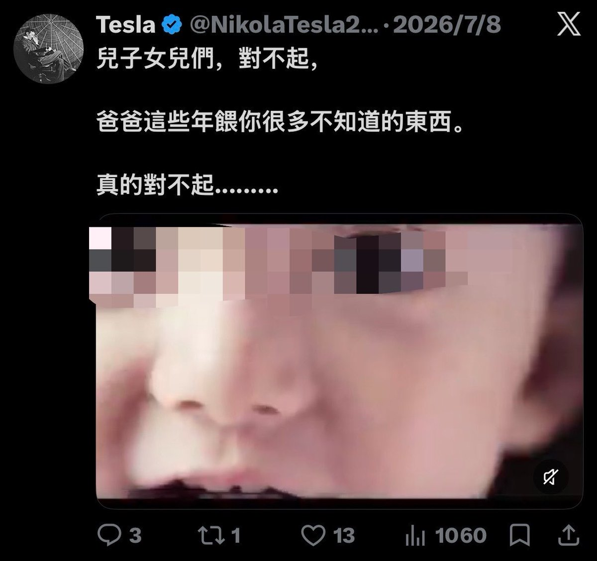
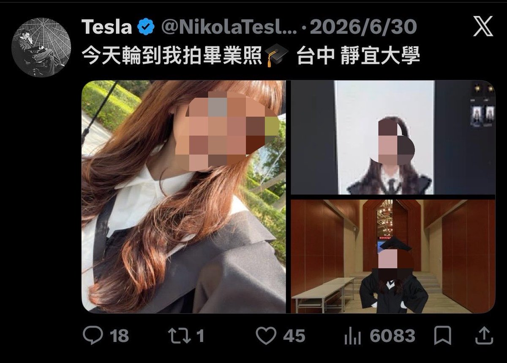
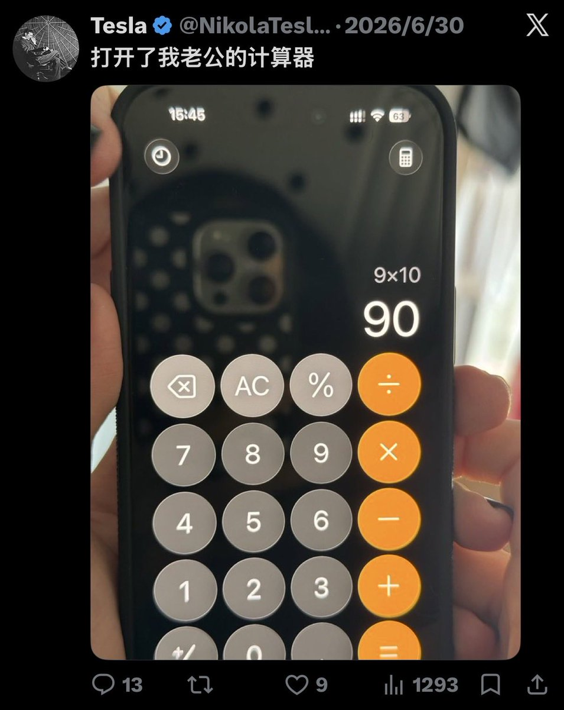
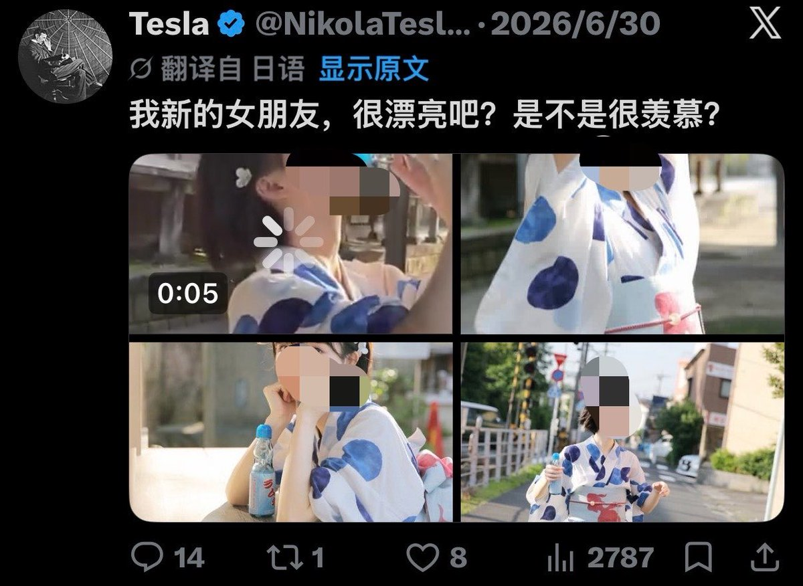

1713✝️❤️🔥
@sss_1713
爱国皮下男连立人设都不会，在推特成功实现了又当爹又当妈。
在短短一天的时间之内不仅完成了大学毕业，又完成了结婚并且在百忙之中抽空查看老公的计算机，甚至在结婚当天就出轨了一位女性。
靠盗图盗视频用繁体字装台湾人，且大部分帖子都是在装台女，皮下男概率99.9999999999999999%。




Tesla
@NikolaTesla2010
今天，我決定退出民進黨。
我是臺南人，32 歲，支持民進黨八年。
這八年，我始終相信民主，也相信這個政黨能讓臺灣變得更好，從小英到賴桑，每一次投票，我都沒有猶豫。
但最近民進黨對毒油的處理態度真的讓我很失望。 https://t.co/n3qgcSQ6pK